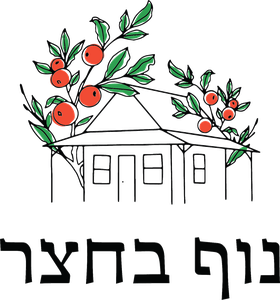
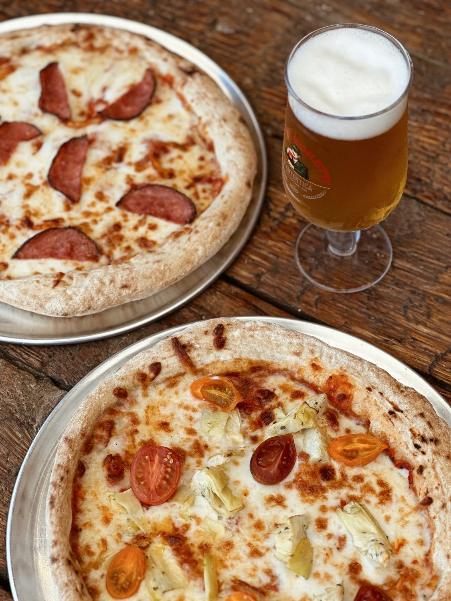
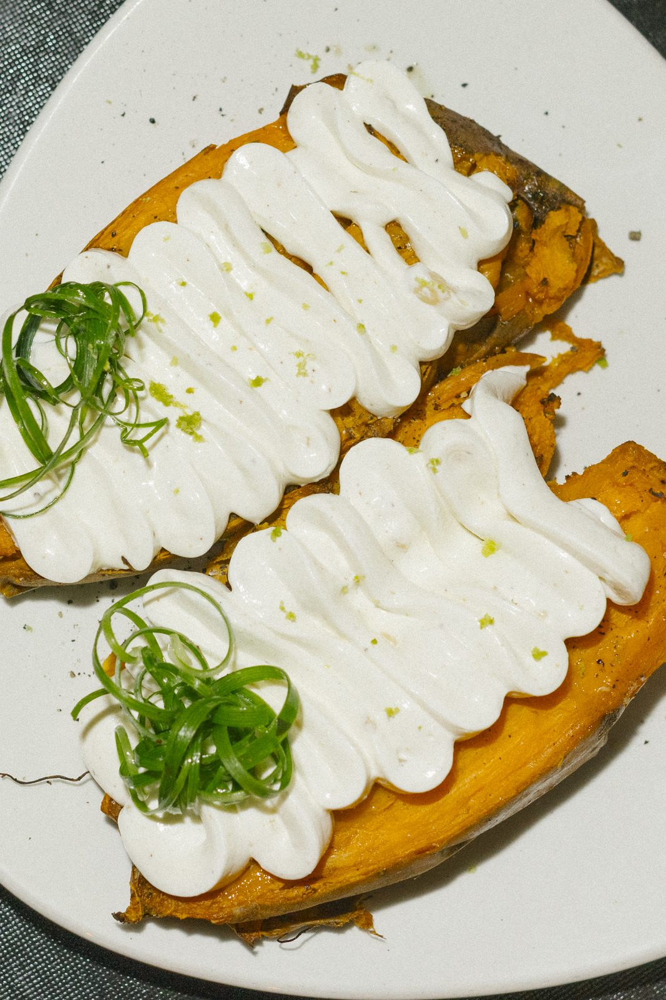
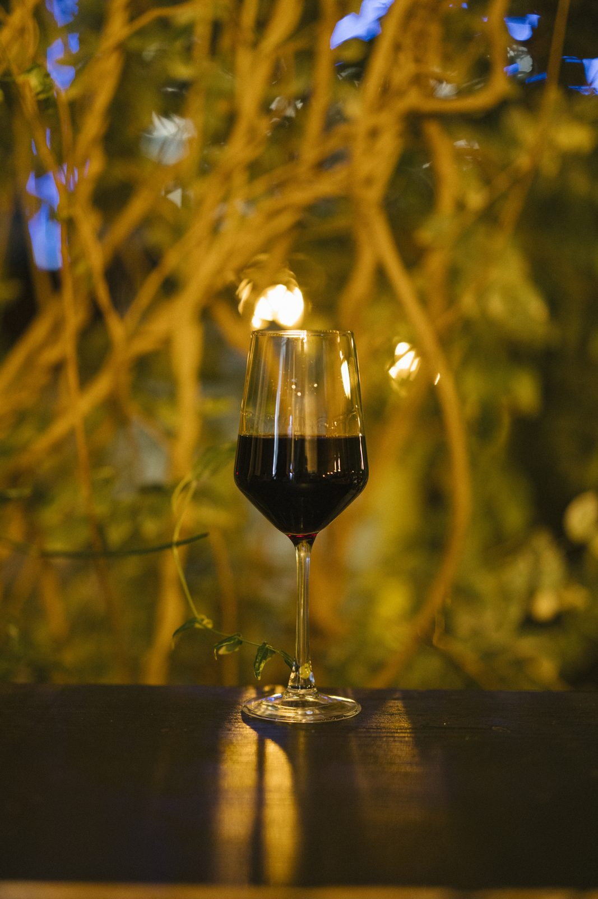

אנחנו מחפשים אנשים טובים שאוהבים לארח ולשמח. תנאים מעולים, סביבת עבודה חמה ומשפחתית, ומקום שבאמת שווה לבוא אליו בבוקר.
שלחו לנו וואטסאפ
בית קפה בבוקר, בר יין בערב וחנות יין לכל אורך היום.
מקום מפגש סביב יין טוב, אוכל טרי וטעים ומוזיקה שמחברת הכל יחד.
בחצר אורבנית קסומה בלב הוד השרון נפגשים יין, אוכל טוב ואנשים טובים. בית קפה בבוקר, בר יין בערב — מקום מפגש שמזמין אתכם פשוט להגיע, להירגע ולהנות.
המטבח שלנו עונתי וקליל: מנות שניתן לחלוק, עם חומרי גלם האיכותיים ביותר. אנחנו לא מתחכמים יתר על המידה — רק טריות ועונתיות בכל צלחת.


בחנות היין שלנו תמצאו מעל 120 סוגי יין ממדינות שונות מסביב לעולם — את כולם ניתן לפתוח ולשתות ישירות בישיבה. תפריט היין שלנו מתחלף על בסיס יומי, כדי שתמיד תמצאו משהו חדש.
כחנות יין אנחנו מתחייבים למחיר הכי משתלם בישראל. מגוון עשיר, מחירים הוגנים — לקנייה הביתה ולשתייה במקום.

הצצה לאווירה, לאוכל וליינות שמחכים לכם.
הזמנת מקומות מתאפשרת בערבים בין השעות 16:00–20:00 בלבד. בכל שאר הזמן הישיבה על בסיס מקום פנוי.
המכבים 29, נווה נאמן, הוד השרון. שימו לב — אין חנייה ברחוב המכבים. ישנם 2 מגרשי חנייה ייעודיים סביב החצר, ובמרחק כ-150 צעדים מקניון שרונים.
ימי א'–ד', 16:00–10:00 — 20% הנחה על כל האלכוהול.
18:30–16:00 — 20% הנחה על כל התפריט.
הזמינו מקום מראש או הציצו בתפריט המלא לפני שמגיעים.